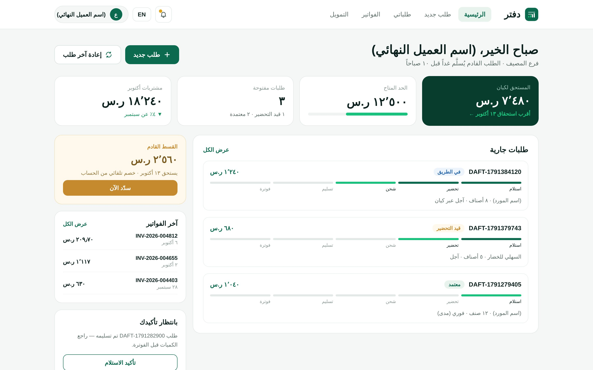

Agricultural and food supply chain financing
We pay suppliers and farmers today, and collect from the customer when payment is due.
In the produce market, goods move every day but payment arrives weeks later. Kayan finances that gap with Shariah-compliant contracts and records every order on Kayan Ledger.
For suppliers
Cash on confirmed delivery, instead of waiting 45 to 90 days.
For farmers
Payment for your crop on delivery, or upfront under a Salam contract.
For end customers
Buy now, pay later through Kayan Ledger, with no added fees.
For investors
Profit from real food trade under a Mudarabah contract.
Kayan Ledger
Every order on record, from request to payment
Kayan Ledger is the system every order runs through. It is what makes financing possible in a sector that has long relied on paper and verbal agreements.
- A ZATCA-compliant e-invoice for every order
- Documented proof of delivery before any payment
- Real-time tracking of orders and balances for every party

Join us
Choose your role in the chain.
A restaurant or hotel? Contact us to open a Kayan Ledger account.
Kayan in numbers
All the numbers →100+
farms in our supplier network
4
years operating inside the market
30–45
days per cycle, from purchase to collection
15%
target annual return for the Kayan Fund
Have a question before you start?
We have gathered the questions we hear most often. If yours is not there, contact us directly.